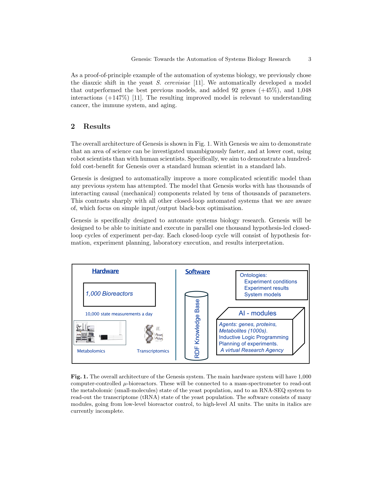

Figure 1
수천 개의 인과 요소로 구성된 시스템 생물학 모델을 자동으로 개선하는 차세대 로봇 과학자 Genesis의 설계와 개발 진행 상황을 보고하는 논문으로, 하루 1,000회의 가설 주도 폐쇄 루프 실험 사이클을 목표로 한다.
과학 연구에 AI를 적용하는 최전선은 폐쇄 루프(closed-loop) 자동화, 즉 로봇 과학자(robot scientist)의 구현이다. 저자 그룹은 이전에 효모 기능 생물학용 'Adam'과 초기 약물 설계용 'Eve'라는 두 로봇 과학자를 개발한 바 있다. Genesis는 이들의 차세대 후속 시스템으로, 로봇 과학자가 인간 과학자보다 명백히 더 빠르고 저렴하게 특정 과학 영역을 연구할 수 있음을 실증하는 것을 목표로 한다. 시스템 생물학은 수천 개의 상호작용하는 요소가 있는 복잡한 모델을 다루므로, 자동화의 이점이 극대화될 수 있는 영역이다.
6. 두 가지 관계 학습 생물정보학 프로젝트로 인프라의 유용성 실증
Genesis는 가설 주도 폐쇄 루프 과학 자동화를 위한 통합 시스템으로, 여러 서브시스템으로 구성된다:
Genesis는 과학 연구 자동화의 야심찬 비전을 제시하는 프로젝트로, 하루 1,000회 병렬 폐쇄 루프 실험이라는 목표는 기존 로봇 과학자 대비 양적·질적 도약이다. 각 서브시스템(μ-bioreactors, AutonoMS, Genesis-DB, RIMBO, LGEM+)의 설계는 체계적이며, 특히 LGEM+의 귀납적 모델 개선 접근법은 과학적 발견 자동화의 핵심에 해당한다. 그러나 진행 보고서(progress report) 성격의 논문으로, 전체 시스템의 통합 운영이나 인간 대비 우위의 실증은 향후 과제로 남아 있다. 최신 LLM/FM 기술과의 통합이 부재한 점은 아쉬우며, 향후 가설 생성과 문헌 분석에 LLM을 접목한다면 시스템의 자율성이 크게 향상될 것이다. 과학 자동화 분야의 방향성을 보여주는 중요한 프로젝트이나, 최종 목표 달성까지는 상당한 엔지니어링 과제가 남아 있다.
| 항목 | 점수 (1-5) |
|---|---|
| Novelty | 4 |
| Technical Soundness | 3 |
| Significance | 4 |
| Overall | 3.7 |
총평: 시스템 생물학을 위한 로봇 과학자 자동화를 지향하는 선구적 연구로 비전과 초기 구현 모두 흥미롭지만 완성도는 진행 중이다.